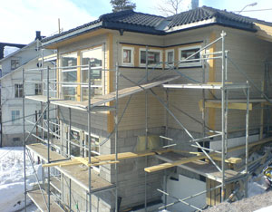

GEIRARNE/FLICKR
More than 100,000 Energy Star-certified homes were built in the United States in 2008. The nation’s now 940,000 Energy Star-certified homes save more than $250 million on utility bills annually.